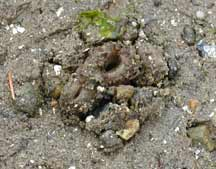
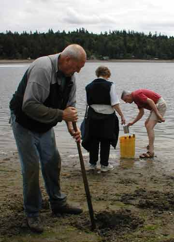
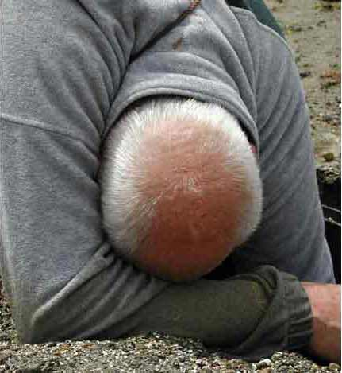
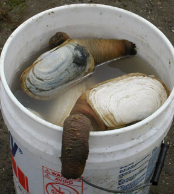

|
|
|
Sometimes it pays to stand outside the carnival of life, to withdraw as a player and observe as if part of the audience. Then, human activity becomes no longer commonplace, predictable or even boring… it becomes more a moment of wonder, hilarity, or education, where what is routine for one person is education, or entertainment, for another. Herron Island offers perfect opportunities for us to step back and observe with the eyes of a child, as if seeing things for the first time, whether these be real or imagined. The following chronicle was one such recent opportunity...
This year Memorial Weekend in the Pacific Northwest witnessed one of the lowest tides for a long while. These two events coinciding drew out more than a few examples of that rare and unique breed of adventurers… the intrepid "geoduck hunters". Geoducks (pronounced "gooey-ducks"), illusive and dubiously-shaped clams… are more politely known as the "elephant trunk" clam in Asian parts, but are actually better described by a part of the male human anatomy for western tastes. They are considered a great delicacy, particularly in Japan, but they can only be found and harvested in the Puget Sound region, increasing their rarity value in the Sushi emporiums across the Pacific. Without a shadow of a doubt, the geoduck is probably one of the most the most revolting edible creatures on the planet… one that had to have been created on one of God's off days. But, then again… there's always the taste that makes up for its other deficiencies!
|
 |
|
With such a revolting appearance, perhaps the best thing about the geoduck is the fact that it can only be really detected during the kind of exceptionally low tides that witnessed our Memorial Day weekend. The geoduck's natural environment lies deep beneath the water, indeed deep beneath the sandy beds beneath the water. Even at low tides, the only real clue to a geoduck's presence is it's subtle protuberance that barely touches the top of the sand bed. Even then it is well camouflaged by color and texture. Clearly, if nothing else, the geoduck is most definitely not a show-off, preferring to remain hidden to all but the most trained eye. |
|
Another clue to the geoduck's presence of course is its occasional squirting of fluid several feel straight into the air from the sand's surface… as any unsuspecting, short-wearing, beach wanderer will attest! The uninitiated can be forgiven for confusing this large bursting stream of fluid for that of the "horse clam", which acts similarly. However, further investigations will reveal that the snout of the geoduck contains two nostrils, whereas the snout of the horse clam has one.
The subtle, twin-nosed siphon of the geoduck is merely the tip of an enormous iceberg, if the truth were known. (Or shall we be polite and imply an enormous "elephant's trunk", as opposed to other more dubious suggestions!) Essentially, it is a tube that travels vertically down beneath the seabed, where it enters into the geoduck's shelled body two to three feet below the surface. However, so sensitive is the siphon of the geoduck that should they detect even the slightest hint of movement on the surface...i.e. human invasion... then this crude extension will immediately shrink back down below, leaving nothing but a darkened hole in the surface of the sand. The geoduck is therefore not an easy creature to snare... should you ever choose to do it that is? The geoduck is, in fact, a sneaky critter, which requires the most speedy and persistent actions of a seasoned hunter to snag it.
Were geoduck's equipped with sufficient brains to be aware of the dangers of such a low tide event such as Memorial Day they would, no doubt, vacation elsewhere during the holiday period. Fortunately for the geoduck goaled however, being a quite primitive creature, the stubborn geoduck remains where it is… which does nothing but encourage their potential demise through such unconscious recklessness. Even so, the geoduck is not easy pickings… just, apparently, shortsighted pickings.
|
Now enter Max Hochanadel, an
intrepid geoduck hunter from the Herron Island
community. Max
has the admirable pedigree for being able to ferret out the
undesirable from the
inaccessible.
(Clearly his ex-attorney skills have prepared him
well.) When the
tide is low, as it was on the holiday weekend, Max reveals
himself as a man with a
mission.
Indeed, it's even safe to say that Max is a giant
amongst gooey duck hunters. (In fact, I think
it's also safe to say that Max is a giant amongst most men,
as his six-foot plus frame
attest.) Max knows how to
sniff a geoduck from mile
away. He not
only knows how to sniff them out… but also how to stake them
out, dig them up and chow them down when the time is
right. When it comes to the actual attack, Max demonstrates that a moment wasted is a moment lost, especially when the shovel first bears down on the surface of the sand. As a consequence, Max digs like fury when primed to attack. His method of attack is quite simple. Stealth and determination mark the initial stages… eagle-eyed homing-in on his kill, driving in a trusty wooden stake to mark the whereabouts of the fated geoduck. Then, shovel in hand, his assault on the geoduck lair and his subsequently extracting it rudely from that lair, is nothing short of awe-inspiring. His speed of digging is almost a blur. |
|
 |
|
|
|
|
|
The process of geoduck hunting
is well documented.
First, a hole is dug in the sand where the geoduck is
located, with a radius of about a foot all round
it. This hole
is then dug to a depth of about two feet, the hunter barely
stopping even for
breath. Slower
geoducks have been known to remain during this ferocious
dig. But this
invariably proves to be an unwise tactic as it risks
decapitation by the shovel blade and certain
death. However,
a geoduck that has more of its wits about it will speedily
withdraw his precious siphon... burying his head in sand, so
to speak… hoping the impertinent threat above will go
away. The even
smarter geoduck might even attempt to burrow deeper into the
sand, to avoid the hunter's
grasp. But few
do, ultimately… unless trained like an Olympic sprinter on
steroids.
|
|
|
|
|
Once Max's geoduck tub is in place, his tireless and battle-scarred hands claw frantically at the sand within the tub, bringing him closer and closer to his now, no doubt, quaking prey. Cup-shaped shells, or a simple metal cup, enable Max to scoop out more and more of the course sand that would otherwise slip through his strong but weakened fingers. Yet neither bleeding wounds, nor shifting sands, are any deterrent to Max. He smells blood... or at least, fresh gooey duck fluid! |
|
Intensified frantic digging eventually reveals enough of the elongated head, neck and shell's shoulders of the geoduck for Max to make his final move. This is the moment that every seasoned geoduck hunter dreams of... a clean purchase on their tenacious foe's most prominent part! Grabbing the doomed geoduck's protuberance, and making light of the implied action that is suggested, Max pulls and wriggles the gooey duck's long neck and snout back and forward, round and round. This way the tenacious creature's body is slowly bur surely loosened from the rigid and ungiving sand it is embedded in. Back and forth, round and round, Max tussles with the uncompromising protuberance until, at last, the geoduck's body is released. Max's uncompromising hand draws the geoduck slowly from its dark refuge... accompanied, it must be said, by an extremely rude slopping sound. The vanquished is raised into the air, in triumph. A broad, cheeky grin beams from Max's triumphant face. The onlookers who have gathered gasp, chuckle and cheer in appreciation as the spoils are revealed for all to see. |
|
 |
|
|
|
|
As said before, newcomers to the geoduck phenomenon cannot fail to note the creature's resemblance to the most proud of human male parts. One need hardly imagine that the men seeing this can only but dream of what they might have been… while their wives or girlfriends dream the same dreams also… perhaps even more so. Victorious Max only encourages such thoughts, of course. To the suggestion made by one onlooker that "It's a big'un", Max cheekily responds… "Yes, and the geoduck's big too!" As for the poor, defeated geoduck... destined, as the clams before it, to be but chowder in a few hours… it can only offer one last, defiant gesture as it is carried now limp to Max's trusty and well-filled bucket. It squirts a final, well-aimed pee all over my new, clean shirt… as if mocking my admiration for it's ultimate demise. |
|
PostScript:
Several hours later I joined Max, his family and his friends
to taste their legendary geoduck
chowder. It had been a
casual remark by Max but I was soon to learn that this was typical
off his big-hearted generosity.
I chanced to mention that I had never even tasted a geoduck,
so he and his family immediately invited my wife Meredith and I to
come over and taste theirs.
As it turned out, although the visit was later than I had
anticipated Max, his wife and guests were all at the beginning of
their dinner. The last thing I like doing is interrupt folks
at dinner (we absolutely refuse to answer the phone at such times
ourselves) but Max and the family were
unphased. A space was
duly cleared for me at the table (Meredith was not with me as she had
to watch over the kids on the North Beach) and instead of six for
dinner there was now seven.
Actually, the others had already
consumed the geoduck chowder, for there were spotlessly empty bowls
before them when I arrived.
However, before I could even say "sorry to inconvenience you
guys" a hot bowl of the legendary chowder had suddenly appeared in
front of me… its delivery was accompanied with the words "Be careful,
it's hot" and "I'm afraid it it's a bit
chewy". However, I was
beyond such warnings.
Here before me lay the spoils of the day's hunting
party... like a sacred
and time-honored elixir for all that ails
you. I hurriedly, and hungrily, lifted the spoon to
my lips. First a sip, to
avoid burning the tongue.
Then the whole spoonful... hot but not too
hot. Then the
chew. It proved accurate
for my hosts to say it was
"chewy". It most
certainly was… but not enough so as to make it impossible to
eat. Like the struggle
of living geoduck to resist the hunter's grip, so too the taste of
the conquered geoduck made it's eater fight to savor the
taste. But what a
taste! geoduck chowder,
excellently cooked within a few hours of the hunt, is the most
wonderful thing to behold.
Well worthy of the remorseless tussle its hunter had to affect
its ultimate demise.
|
 |
|
Max, an ever-present twinkle in his eye that confirms he knows exactly the joys of being experienced, smiled broadly at my pleasure. I declared "It was good… wonderful!" and he accepted the complement graciously. He could see that here was yet another convert to the low tide tradition that graces this part of the world, unique amongst all others. I couldn't contain the not-so-small satisfaction that I too felt when sampling the well-cooked geoduck. After all, wasn't it this very same geoduck that had peed all over at my shirt just as few hours earlier? Now here I was, in full enjoyment… willingly appreciating the great sacrifice that this humble creature had made. I was somewhat smug in my culinary "seventh heaven", yes. But I couldn't help reminding myself that the geoduck had somewhat of the last laugh… through the fact that, throughout the dinner, I constantly had to cover up the embarrassing geoduck pee stains (which I had forgotten about on my shirt) lest it should offend my new-found friends around the dinner table! |
|